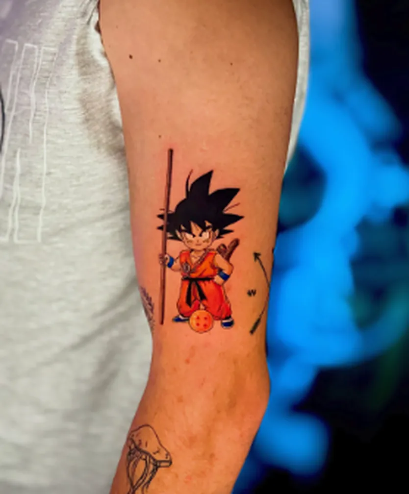
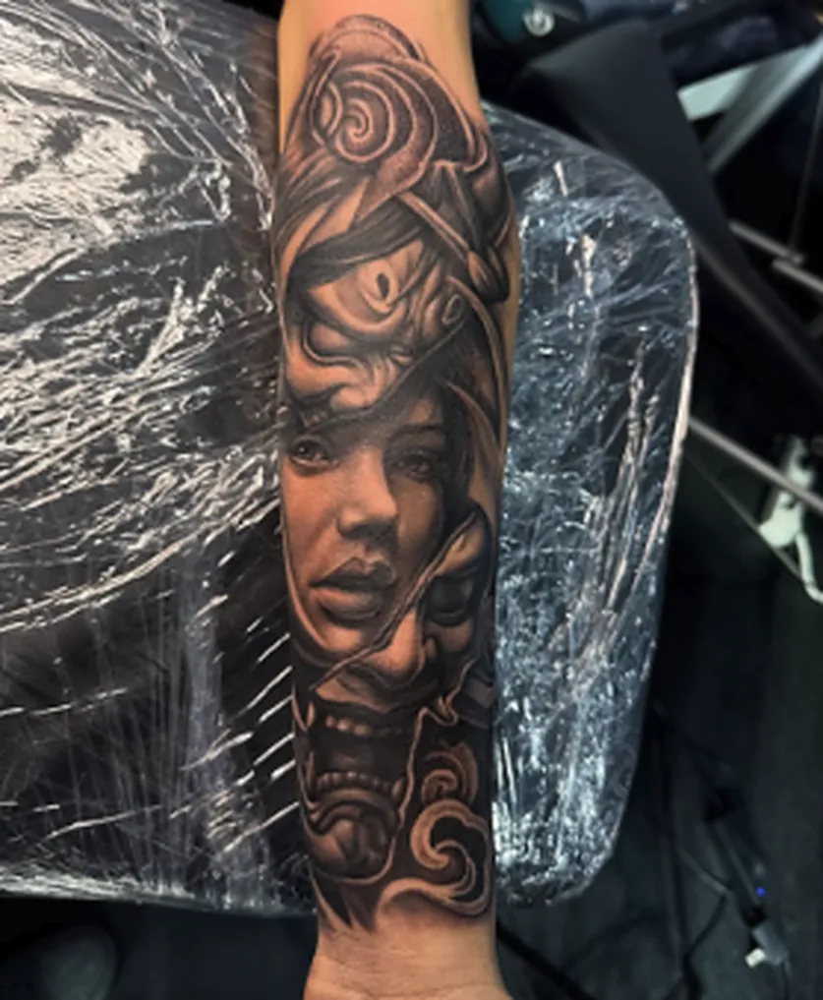

Estarreja · Tatuagem e piercing
Ideias que viram histórias na pele.
Tatuagens e piercings com arte, dedicação e personalidade. Um espaço criado para transformar ideias em histórias na pele.
3 artistasEstarrejaTatuagem · Piercing
O estúdio · 01
Cada tatuagem começa numa ideia. Aqui damos-lhe forma, traço e luz, com arte, dedicação e personalidade, para que a tua história fique na pele.
Tatuagem
Do desenho à última linha
Realismo, new school, linha fina, preto e cinza e cor. A peça é pensada contigo, com o artista que melhor fala a língua da tua ideia.
- Realismo David · Carlos
- New school e cor David · A'Kay
- Linha fina David · A'Kay
- Preto e cinza A'Kay · Carlos
Piercing
Um detalhe com personalidade
Além das tatuagens, o estúdio faz piercings. Joias, zonas e cuidados a seguir explicam-se na conversa, antes de decidires.
Joias, preços e disponibilidade: a confirmar com o cliente
Os artistas · 02
Três artistas, uma só luz.
Toca num nome para o acenderes. Cada artista tem o seu biolink, com contactos e trabalhos.




Trabalhos · 03
A parede do estúdio
Peças dos três artistas. Escolhe um artista ou um estilo e o resto apaga-se. Toca numa foto para a ver em grande.
Artista
Estilo
A sessão · 04
Da ideia à pele, raio a raio.
- 01
Conversa
Contas a ideia, a zona do corpo e o tamanho que imaginas. Não precisas de ter tudo decidido.
- 02
Desenho
O artista prepara a proposta contigo e ajusta até a peça estar como a imaginas.
- 03
Sessão
No dia marcado, a ideia passa para a pele. A duração depende do tamanho e do detalhe de cada peça.
- 04
Cuidados
Recebes indicações para a cicatrização, para a tatuagem ficar com a melhor aparência.
Passos ilustrativos. O processo real é definido pelo estúdio e a adequação de cada trabalho depende da avaliação do artista.
Contacto · 05
Fala com quem vai tatuar-te.
Ainda não sabes por onde começar? Escolhe o artista cujo trabalho mais te diz e abre o biolink dele. É lá que está tudo.
01David PitaRealismo · New school · Fine lineBiolink ↗
02A'KayPreto e cinza · Cor / pop · Linha finaBiolink ↗
03Carlos BritoRealismo preto e cinza · Grandes projetosBiolink ↗
Onde
Estarreja
Morada
a confirmar com o cliente
Telefone / WhatsApp
a confirmar com o cliente
Horário
a confirmar com o cliente